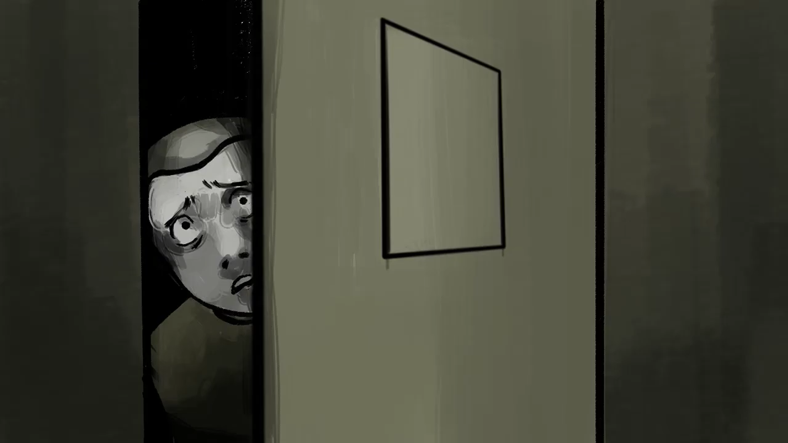
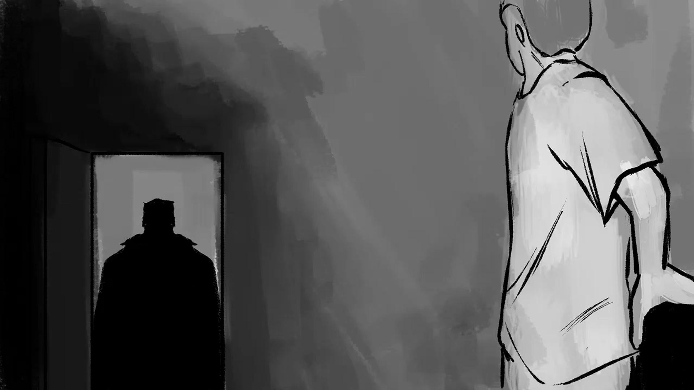
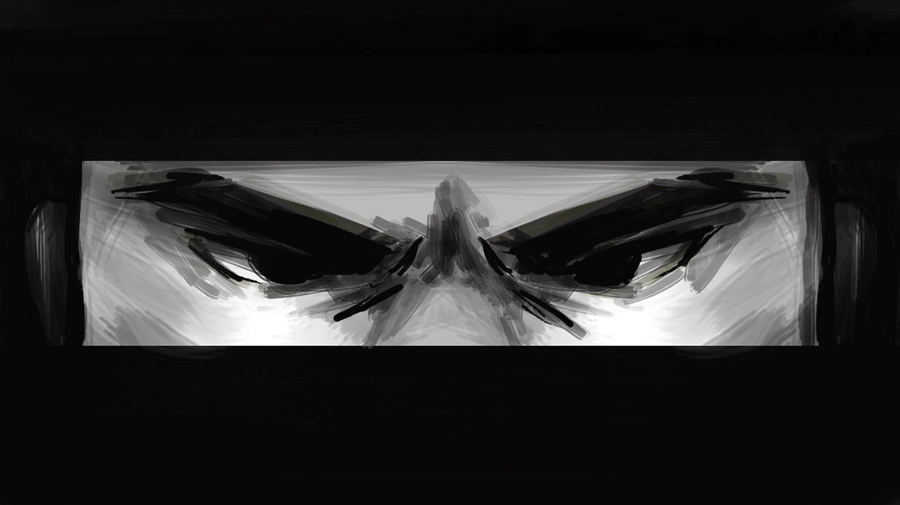
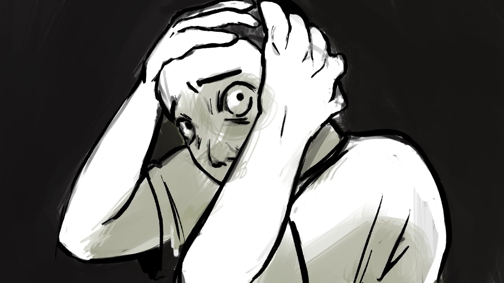

gcanopaulina@gmail.com

Cortometraje individual, desarrollado como animatic, enfatisando en el encuadre y la suciedad del trazo, para dar un estilo de sketch al proyecto. Con grandes infuencias a Sin City y Punisher. La historia trata de un detective que localiza y aprehende a un presunto sospechoso. El proyecto se desarrollo enteramente en Krita.


